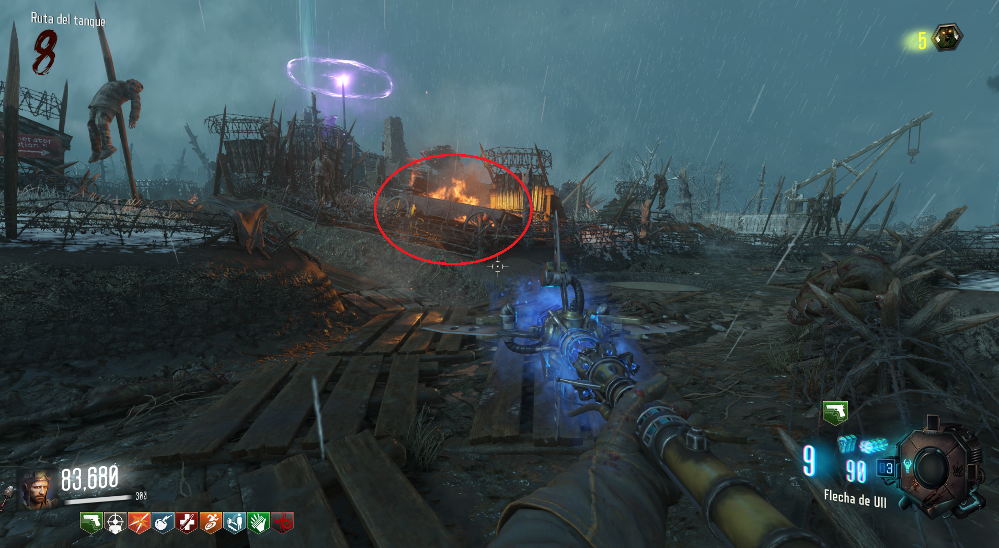

Sangre Zombie (Origins)
Requisitos:
Bastón de hielo.
Para conseguir un sangre zombie que nos puede ayudar con el Easter Egg, deberemos de disparar a tres carretas prendidas de fuego con un disparo simple del bastón de hielo.
Localizaciones de las carretas:
❮
De camino al generador 4, desde Excavación.
Saliendo del Búnker, antes de la Excavación.

Antes de la huella del generador 5.
❯
La sangre zombie aparecerá al lado del PaP.